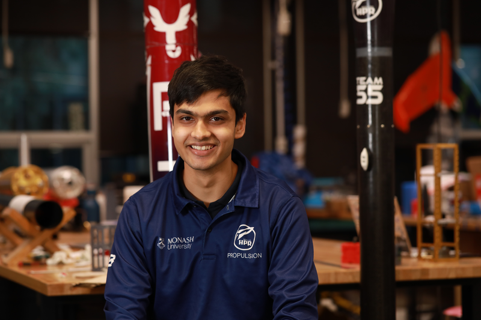
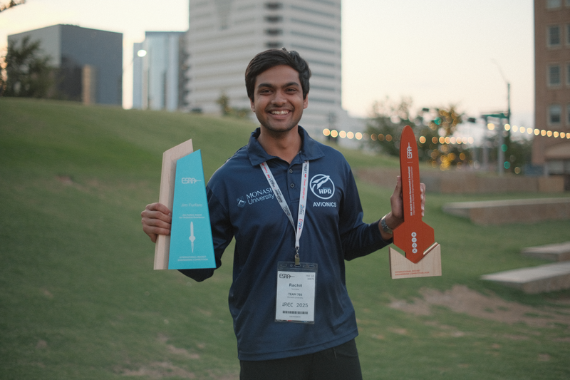
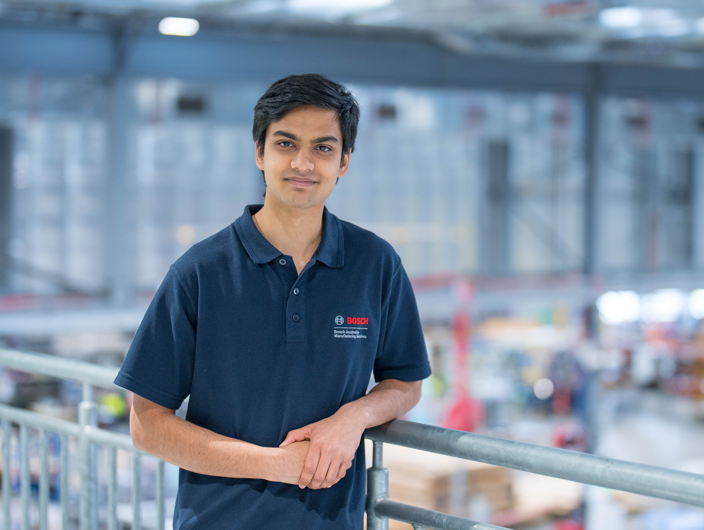
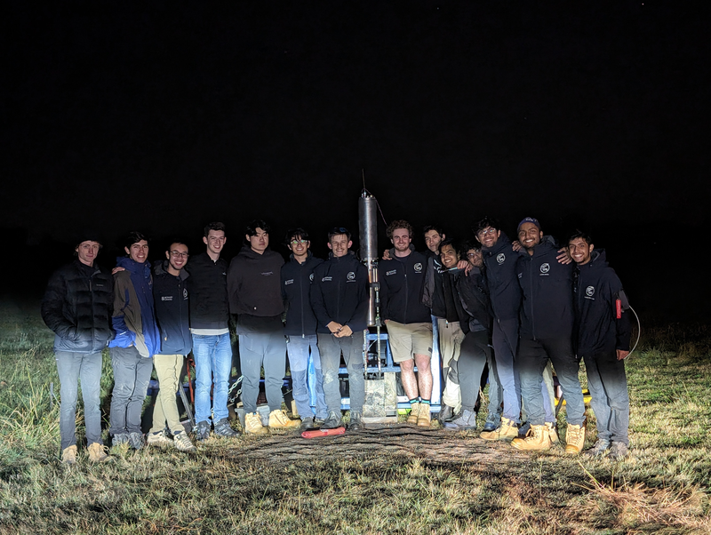

About
I build and operate hardware software systems in environments where testing exposes real failure modes. My experience spans industrial automation and propulsion test infrastructure, where reliability, timing, and instrumentation quality directly affect outcomes.

Snapshot
- Bachelor of Mechatronics Engineering, Monash University
- Student Vision, Robotics and Simulations Engineer, Bosch Australia Manufacturing Solutions
- Former Avionics Vice Lead, Monash High Powered Rocketry

Receiving the Jim Furfaro Award for Technical Excellence and 2nd Place Award at IREC 2025

Working on production-deployed vision systems for manufacturing lines at Bosch.
Podium session presentation of engine and ground systems control architecture at IREC 2025.

Hot-fire testing of a student-built hybrid rocket engine.
How I Work
I approach engineering from a test and operations perspective. I focus on whether a system behaves predictably across repeated runs, under imperfect conditions, and when operated by others.
At Bosch, this meant building multithreaded software that tolerated device failures, recovered cleanly, and met strict cycle time requirements on live production equipment. Debugging often spanned software, networking, cameras, and PLC logic, with limited ability to pause or isolate the system.
In rocketry, I helped operate avionics and ground systems during cold flow and hot fire testing, verifying instrumentation, monitoring telemetry, and diagnosing issues under time pressure. I also designed and integrated a custom capacitive propellant fill sensor, handling the sensing hardware, embedded firmware, calibration, and integration into automated test sequences. Reliable data was critical, as it directly affected test safety and outcomes.
Across both environments, I value clear ownership, structured system design, and documentation that reflects how systems are actually operated. I am comfortable moving between software, electronics, and test operations as needed, and I aim to leave systems in a state where others can operate and extend them with confidence.